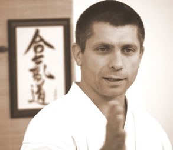

Gollob SzabolcsCurriculum vitae  Aikido - 5. dan AIKIKAI / Iaido - 2. dan FEI / Jodo - 2. dan FEJ Ecole de BUDO- RAJI International - Advanced Instructor Dojovezetõ tanár - Magyarországi RAJI Budoiskola, Tenjinchi dojo A Magyar Aikido Szövetség technikai bizottságának tagja
* Budo:Elsõ Aikido tanára a madagaszkári származású Rakotoarinivo Jean Hugh Michel, aki kisugárzó emberségével és finom mozdulataival nagy hatást gyakorol rá, és ezzel meghatározza késõbbi munkájának alapirányát. Oktatni 1987-ben, Michel hazautazása után kezd a Magyar Aikido Szövetség tagjaként. További tanulmányainak elsõ jelentõs tanáregyénisége az osztrák Günther Steger lesz, aki a nyolcvanas évek közepétõl rendszeresen látogat Magyarországra. 1987-ben találkozik Nobuyoshi Tamura Shihanal, aki az egyik legnagyobb tudású és legmeghatározóbb ma élõ Aikido nagymester. 1988-ban Tamura sensei elõtt vizsgázik elsõ danra, egy németországi edzõtáborban. A nyolcvanas évek végétõl rendszeresen részt vesz a Közép-Európába látogató mesterek (Tamura, Fujita, Kobayashi, Veneri, Yokota, Patt, Savegnago, Tissier, Narey, Suga) szemináriumain. Ebben az idõszakban az angol Michael Narey van rá a legnagyobb hatással. Michael legfontosabb tanítása: a technikák a fizika törvényein alapulnak, és összefüggõ rendszert alkotnak. 1988-89-ben a felnõtt edzéseken kívül gyerekcsoportokat is vezet. 1989-ben Botka Péterrel és Katona Józseffel alapító tagja a Klapka dojonak. Josival 1996-ban létrehozzák az AIKIDO CHUSHINKAN-t, amely a Magyar Aikido Szövetség fejlõdésének egyik meghatározó eleme lett. 1993 nyarán rendkívüli emberrel hozza össze a sors. A franciaországi Bloisban, az FFAB (Francia Aikido és Budo Szövetség) instruktori szemináriumán megismerkedik Jaff Rajival, a Tamura sensei nevével fémjelzett Francia Aikido és Budo Szövetség fiatal technikai megbízottjával. Ez a találkozás fordulópontot jelent munkájában, és minden addiginál meghatározóbb jelentõségû lesz a késõbbiekben. Jaff munkájában az egyszerûség és egységesség ragadja meg: tanítása egyszerre átgondoltan felépített és intuitív, mozdulatai pedig finomak és határozottak. A kilencvenes évek elsõ felében beválasztják a MASZ Technikai Bizottságába, melynek ma is aktív tagja. 1996-ban levizsgázik harmadik dan fokozatra. A Magyar Aikido Szövetség egyik technikai vezetõjeként, a 90-es évek közepétõl rendszeresen tart hétvégi kurzusokat Magyarországon és Erdélyben. Az egyre sûrûsödõ találkozások és a koncentrált fizikai és szellemi együttmûködésen keresztül kapcsolata Jaffal, az egyszerû tanár-tanuló viszonyból szoros barátsággá, és valódi mester-tanítvány kapcsolattá érik. 1999-ben találkozik elõször Malcolm Tiki Shewannal, az Európai Iai Szövetség alapítójával, és az FFAB 6. danos Aikido mesterével. Tiki Tamura sensei egyik kiemelkedõ tanítványa és egyben Jaff egyik legfontosabb tanára is. E találkozás még jobban megerõsíti abban, hogy helyes irányvonalat választott. Tiki egyénisége és tanítása ráirányítja figyelmét a függõlegesség egyszerre gyakorlati és szimbolikus jelentésére és fontosságára a budo gyakorlásban. 2001-ben Jaffal elindítja a Perõcsényi BUDO szemináriumok hagyományát. 2002 februárjában Tamura sensei és Yamada sensei közös budapesti edzõtáborában sikeres 4. danos vizsgát tesz. Az év elejétõl újra gyerekcsoportokat indít. 2002 nyarán egy dél-franciaországi budo szemináriumon ismerkedik meg Tiki és Jaff közeli munkatársával és barátjával, Rene Van Drogenbroekkal, közismertebb nevén VDB-vel, Tamura sensei egyik legrégibb tanítványával, akit elsõk között terjesztettek fel az FFAB tanárai közül 7. dan fokozatra. VDB technikai tudása, hatvan fölötti korát meghazudtoló fürgesége, fiatalos határozottsága, de mindenek elõtt határtalan kedvessége, és a fiatalok iránti tisztelete újabb rendkívüli adalékot jelent a munkájához. Ugyanebben az évben kezd - Jaff vezetésével - Muso Shinden Ryu Iaido-t és Shinto Muso Ryu Jodo-t tanulni, ami új értelmet és hátteret ad Aikido gyakorlásának. Ebben a friss és lendületes munkában sokat köszönhet tanítványainak, Vilcsek Péternek és Nagy Sándornak. 2003 augusztusában az Egyesült Államok-béli Portlandban részt vesz az Ecole de BUDO RAJI International, vagyis a Nemzetközi RAJI BUDO Iskola megalapításában. Az alapító tagok - elsõsorban az amerikai Michael Selin és a venezuelai Luis Gonzales - munkája és elkötelezettsége példaértékû számára. 2004 novemberében Genfben, az Európai Iai Szövetség (FEI) éves táborában sikeresen levizsgázik elsõ dan fokozatra Iaidoból. Genfben Pascal Krieger személyében újabb rendkívüli emberrel ismerkedik meg. Pascal, amellett hogy a FEI alapító tagja és egyik technikai vezetõje, a Shinto Muso Ryu Jodo menkyo kaiden-je (teljes jogú nagymestere), az Európai Jodo Szövetség (FEJ) alapítója és technikai vezetõje, valamint 10. danos shodo (kalligráfia) mester. Pascal munkája, egységes személyisége és teljes lénye végleg megkérdõjelezhetetlenné teszi számára a Jaffal 1993-ban megkezdett munkát. 2004 végén újabb nagy megtiszteltetés és egyben kihívás éri: Jaff felkérésére hétvégi szemináriumot tart a franciaországi Rennes-ben. Ezt a találkozót azóta minden éveben megrendezik. 2005 õszén a 12 éves szoros együttmûködés eredményeképpen létrejön a Magyarországi RAJI Budoiskola, melynek vezetõ tanára lesz. 2006 januárjában, új formában folytatja a megkezdett munkát: megalakul az Ég-Ember-Föld Egyesület és a TENJINCHI Dojo. Ugyan ebben az évben a Semmelweis Testnevelési Egyetem keretein belül szervezett kétéves edzõi tanfolyam elvégzése után, államilag elismert hivatalos Aikido szakedzõi diplomát szerez. 2007-tõl minden idejét a budo tanulásnak, gyakorlásnak, és tanításnak, valamint az egyesület vezetésének szenteli. Aktívan részt vesz mind a MASZ, mind az Ecole de BUDO-RAJI International technikai színvonalának fejlesztésében rendszeres hétvégi edzõtáborok keretében Budapesten, vidéken és külföldön egyaránt. (Debrecen, Nyíregyháza, Szeged, Zalaegerszeg, Szombathely, Sopron; Nagyvárad, Temesvár, Székelyudvarhely, Csíkszereda (Románia); Rennes, Challans (Franciaország); Portland (Egyesült Államok)) Budo mellett:Gyerekkora óta alapjában véve humán érdeklõdésû. A gimnáziumi évek után angol-orosz szakosként kezdi fõiskolai tanulmányait, majd az ELTE bölcsészkarán végez angol nyelv és irodalom szakon. Fõ érdeklõdési köre a nyelvtudomány, azon belül is a hangtan és a nyelv- illetve hangváltozás. Kezdetben angol nyelvet tanít, majd nyelvészeti tárgyakat fõiskolai oktatóként a Berzsenyi Dániel Tanárképzõ Fõiskolán, majd egyetemi tanársegédként a Károli Gáspár Református Egyetemen. A diploma megszerzése után nyelvtudomány témakörben doktori iskolát kezd az ELTÉ-n, amelyet idõ hiányában félbehagy. 2006 folyamán végleg a budo mellett dönt. 1993 óta nõs, két gyermek édesapja.
Budo elõtt:1968-ban született Budapesten. Újpesten nõtt fel egy kétgyermekes család elsõ fiaként. Kimeríthetetlen mozgásigénye kielégítésére 8 évesen szertornázni kezd a Vasas Izzóban. Itt Ecseki Kálmán keze alatt edz, majd versenyez egyre nagyobb intenzitással. Hat év elteltével az egyre sûrûsödõ versenyek miatt, felhagy a versenysporttal. Azonban a mozgásigény és a mozgás szeretete a következõ két év alatt sem szûnik meg. 1984 õszén Aikidózni kezd...
* VIDEÓCSATORNÁNK:
|
|
| Tenjinchi Dojo | EBR International | Raji Ukemi Fitness | Aikido | Jodo | Iaido | Gyerekcsoport | Órarend | Tanárok Hírek/Események | Fotók / Videók | Olvasnivaló | Linkek |